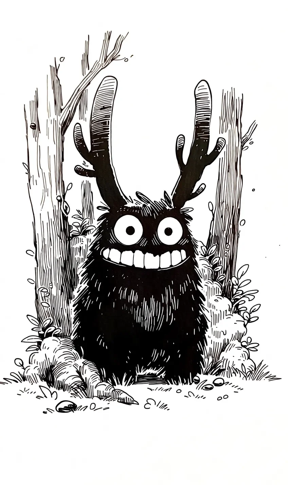

뭉치는 신성한 숲의 수호자예요.
[Mungchi is the guardian of the sacred forest.]
천 년 동안 숲을 지켰어요.
[It has protected the forest for a thousand years.]
문제가 하나 있어요.
[There’s one problem.]
뭉치는 무섭지 않아요.
[Mungchi isn’t scary.]
오늘도 등산객이 왔어요.
[Today, another hiker came.]
뭉치는 나무 뒤에 숨었어요. 그리고 뛰어나왔어요.
[Mungchi hid behind a tree. Then it jumped out.]
“으르렁!”
[”Grrrr!”]
등산객이 멈췄어요.
[The hiker stopped.]
“어머, 너무 귀여워!”
[”Oh my, so cute!”]
등산객이 사진을 찍었어요. 뭉치는 당황했어요.
[The hiker took a photo. Mungchi was flustered.]
다음 날, 뭉치는 더 열심히 노력했어요.
[The next day, Mungchi tried harder.]
이빨을 드러내고 크게 웃었어요.
[It bared its teeth and grinned wide.]
젊은 커플이 왔어요.
[A young couple came.]
“와, 저거 봐! 웃고 있어!”
[”Wow, look at that! It’s smiling!”]
“같이 사진 찍자!”
[”Let’s take a picture with it!”]
커플은 뭉치 옆에서 브이를 했어요.
[The couple made V-signs next to Mungchi.]
뭉치는 한숨을 쉬었어요.
[Mungchi sighed.]
숲의 정령들이 화가 났어요.
[The forest spirits were angry.]
“뭉치야, 넌 수호자야! 인간들을 쫓아내야 해!”
[”Mungchi, you’re a guardian! You have to chase the humans away!”]
뭉치는 고개를 숙였어요.
[Mungchi lowered its head.]
“죄송해요. 저도 무서워지고 싶어요...”
[”I’m sorry. I want to be scary too...”]
그날 밤, 어린 소녀가 숲에서 길을 잃었어요.
[That night, a young girl got lost in the forest.]
소녀는 울고 있었어요.
[The girl was crying.]
뭉치가 다가갔어요.
[Mungchi approached.]
뭉치는 생각했어요.
[Mungchi thought.]
‘이번에는 그녀가 무서워해야 해. 내가 으르렁거리면...’
[’This time, she has to be scared. If I growl...’]
그런데 소녀의 눈에 눈물이 가득했어요.
[But the girl’s eyes were full of tears.]
뭉치는 으르렁거리지 않았어요.
[Mungchi didn’t growl.]
대신, 옆에 앉았어요.
[Instead, it sat down beside her.]
“무서워?”
[”Are you scared?”]
소녀가 고개를 저었어요.
[The girl shook her head.]
“아니. 따뜻해 보여.”
[”No. You look warm.”]
소녀가 뭉치의 털에 얼굴을 묻었어요.
[The girl buried her face in Mungchi’s fur.]
뭉치는 소녀를 숲 밖으로 데려다줬어요.
[Mungchi led the girl out of the forest.]
정령들이 모든 것을 지켜봤어요.
[The spirits watched everything.]
가장 오래된 정령이 말했어요.
[The oldest spirit spoke.]
“뭉치야.”
[”Mungchi.”]
뭉치는 벌을 받을 줄 알았어요.
[Mungchi expected to be punished.]
“미안해요. 또 실패했어요.”
[”I’m sorry. I failed again.”]
정령이 웃었어요.
[The spirit smiled.]
“아니야. 오늘 네가 숲을 지켰어.”
[”No. Today, you protected the forest.”]
뭉치가 고개를 들었어요.
[Mungchi raised its head.]
“무서움은 인간을 쫓아내지만, 따뜻함은 인간이 숲을 사랑하게 해.”
[”Fear chases humans away, but warmth makes humans love the forest.”]
“사랑하는 것은 지키고 싶어지거든.”
[”And what you love, you want to protect.”]
뭉치의 눈이 커졌어요.
[Mungchi’s eyes grew wide.]
그날 이후, 뭉치는 여전히 숲의 수호자예요.
[Since that day, Mungchi is still the forest’s guardian.]
여전히 무섭지 않아요.
[Still not scary.]
하지만 이제 알아요.
[But now it knows.]
가끔, 가장 좋은 수호자는 가장 따뜻한 수호자예요.
[Sometimes, the best guardian is the warmest one.]
그리고 뭉치의 미소는요?
[And Mungchi’s smile?]
천 년 만에 처음으로 진정한 미소가 됐어요.
[For the first time in a thousand years, it became a real smile.]